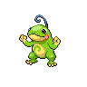

Politoed appears on 50 of 1729 Pokémon Champions VGC tournament teams in the backtwo archive (3% usage, Reg M-A and Reg M-B). The most common item is Sitrus Berry (56% of Politoed sets) and the most common ability is Drizzle. Its most frequent teammate is Incineroar (52% of its teams).
Open Politoed in the full app →| Team | Player | Event | Result | Reg | Date |
|---|---|---|---|---|---|
| alaninepoke's PJCS 2026 Runner Up Team | alaninepoke | PJCS 2026 | Runner Up | M-A | 8 Jun 2026 |
| k_moou's PJCS 2026 Top 16 Team | k_moou | PJCS 2026 | Top 16 | M-A | 7 Jun 2026 |
| kazuki's PJCS 2026 Top 16 Team | kazuki | PJCS 2026 | Top 16 | M-A | 7 Jun 2026 |
| Desu's Turin SPE 2026 Top 16 Team | Nico Davide Cognetta | Turin SPE 2026 | 9th | M-A | 7 Jun 2026 |
| William Brown's Indianapolis Regional 2026 Top 8 Team | William Brown | Indianapolis Regional 2026 | 8th | M-A | 1 Jun 2026 |
| TheGoomy's Indianapolis Regional 2026 Top 64 Team | TheGoomy | Indianapolis Regional 2026 | 63rd | M-A | 1 Jun 2026 |
| LenVGC's Autofall Series Champions Qualifier Champion Team | Alex Soto | Autofall Series Champions Qualifier | Champion | M-A | 1 Jun 2026 |
| LenVGC's VR May Challenge #4 Top 16 Team | Alex Soto | VR May Challenge #4 | 11th | M-A | 24 May 2026 |
| inderunite's Floette Espathra Team | inderunite | - | — | M-A | 25 May 2026 |
| ElctroLychee's Spikemuth Showdown #1 Champion Team | ElctroLychee | Spikemuth Showdown #1 | Champion | M-A | 24 May 2026 |
| Misaka's Ranked Season M-1 209th Place Team | Misaka | Ranked Season M-1 | 209th | M-A | 20 May 2026 |
| VictorKids' Aerodactyl Scovillain Team | Victor Vieira | - | — | M-A | 10 May 2026 |
Showing 12 of 50 teams. See all 50 in the full app →
Already running Politoed and want the rest of the six? The team finder takes the Pokémon you have and ranks every tournament team by how many of your picks it matches. Or run the numbers in the damage calculator — Champions-accurate, with Mega Evolution, Stat Points, weather, terrain and spread reduction.